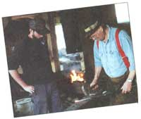
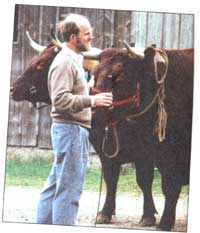
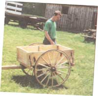
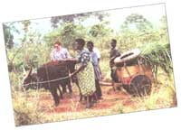
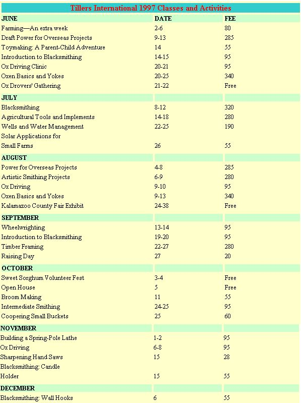

COUNTRY SKILLS
Preserving traditional technology at Tillers International.
Picture yourself in an open field under the radiant sun walking behind a pair of one-ton oxen. The heavy animals plod rhythmically through the soil and you watch dark clumps of earth fall to either side of the plow, creating a furrow for planting. The oxen are wearing a handmade yoke from the woodworking and blacksmith shop and they respond to your "gee" and "haw." There is no hum of a tractor and no smell of its exhaust. You are in southwestern Michigan working the land the traditional way at Tillers International, an organization committed to preserving historical rural skills.
Located on 30 acres of country land at the edge of Kalamazoo, Michigan, Tillers International has offered training in rural skills for over 15 years. International rural innovators, American farmers, historical interpreters, craftspeople, and hobbyists alike travel from around the United States and abroad to sample classes in animal power, farm crops, construction skills, metalworking, woodworking, and international rural development. Class participants plow fields with draft horses, build yokes for oxen, forge fireplace tools, and even travel to Africa to develop and share rural skills abroad.
"Tillers is a skill-based organization," says director Richard Roosenberg, with the small classes structured around hand-son practical experience. In the Sweet Sorghum Molasses class, for example, people from ages 10 to 70 spend the day cutting and preparing sorghum cane, pressing it with animal power, and evaporating the juice to molasses. Participants in the Introduction to Blacksmithing class go home with their own handmade coal chisel after covering the basics of hammer skills, heat treating, and forge welding. Blacksmithing classes are limited to eight people so everyone uses his or her own anvil and no more than two people share a forge.
The practical experience of Tillers classes draws students, volunteers, and interns to the organization. "Right from the start I knew Tillers was a hands-on experience where you were learning and working to support agricultural endeavors," recalls former Tillers intern Alex Crockford. Interested in farming from an ecological standpoint, Crockford says he came to Tillers from the perspective of wanting to live on the land appropriately and act as a steward of the environment.
Janet Ott, another former intern, recalls being thrown into the middle of everything during her first few days at Tillers, from the workshops to the animal care and the day to day living. Animals need to be fed, watered, and taken out to graze and crops need to be tended. Now the spring plowing, disking, and planting make way for the summer cultivating. "There's no typical day at Tillers;" Crockford says. "It starts with chores and ends with chores."
The Village Shop, one of the four barns at Tillers, houses the blacksmithing and woodworking facilities. Built several years ago as part of a timber framing class, the barn is unique because it operates off the electrical grid, thanks to solar cells which power the lights. None of the tools require electricity. The remaining barns store farm implements, hay, oxen, and a power tool workshop.
A large farmhouse serves as the office and guest house, providing on-site lodging for interns and visitors. Finally, an intensive pasture rotation system of oats, wheat, sorghum, beans, corn, clover, and rice completes the Tillers farmstead.
Maintaining the soil through crop rotation is only one example of the earthfriendly farming techniques both taught and practiced at Tillers. The Water and Soil Conservation class offers visitors hands-on practice using animal-powered tools for contour ridging and terracing, creating small catchment dams, and trenching for irrigation. In the Solar Applications for Small Farms class, participants practice connecting photovoltaic panels and wiring for solar electric fencing, small water pumps, farm lighting, and battery maintenance.
In addition to the solar cells in the Village Shop, Roosenberg says he hopes to hook up a solar pumping device to water cattle with stream water, as opposed to well water. The cattle currently are prohibited from walking to the stream in an effort to protect the soil from erosion.
Roosenberg saw a great reaction to the use of animal power when he worked with the Peace Corp in Benin, West Africa, in the early 1970s, and wanted to learn more. In 1981, he started Tillers as a program at the Kalamazoo Nature Center's historic farmhouse. In 1989, Tillers moved to its current location at Abbey Farms, gained non-profit status, and became a program of Rural Futures International.
Operating on a tight annual budget of $130,000, Tillers depends greatly on volunteers and interns. Roosenberg and Dave Kramer are the only full-time paid employees. Roughly one-third of the budget comes from donations, while class fees round out close to another third. The remaining money is raised by selling oxen no longer needed for field work or instruction, and handmade oxen yokes and carts not readily available elsewhere. Publications for sale range from oxen training handbooks to short papers available for a few dollars.
More than 300 people from 35 states contribute to Tillers and around 70 people volunteer their time at the organization. As a result, 400 people took advantage of Tillers classes last year. Each year approximately 20 people vie for two to four internship slots.
Crockford took advantage of the Tillers internship program last year. Although he grew up in suburban Detroit, his father's tales of life on the farm sparked an interest in rural skills. When studying biology at Michigan Technological University, Crockford learned about Tillers through a demonstration of an oxen-powered water pump. Made with plywood, old truck inner tubes, and threaded rods, the tool "pumped water like crazy" and Crockford knew he wanted to learn more about animal-powered agriculture.
Like Crockford, Ott was also drawn to Tillers because of the unique opportunity to learn about animal-powered agriculture. After traveling to Morocco with the Peace Corp in the early 1980s and then earning a degree in animal science at California State University, Ott, 37, was eager to use her skills in development. Tillers accommodated Ott and her husband and two children during her three month internship in 1992.
Working with the oxen was one of Crockford's favorite tasks at Tillers. "It's amazing to be able to go to a 2,000-pound steer and tell him to come with you, and he will, willingly." Crockford found the oxen steady, hard-working, cheap to maintain, and trainable by anybody, including children. While at Tillers, he trained oxen, introducing them to new implements, including carts and sleds, and new work such as harrowing, disking, mowing and raking hay.
Ott also enjoyed working with the oxen at Tillers and keeps up with her oxdriving skills today at Garfield Farm Museum in La Fox, Illinois (630-5848485). "Oxen are big and a little bit clumsy sometimes, but it's such a nice rhythm walking with them," Ott says. "It gives you time to think and pay attention to what's going on around you."
Janet Ott and Kizz Josephine train oxen Peter and John to pull a cart in Uganda, Africa.
Working with the oxen taught Crockford the value of low-capital rural development first-hand. "If you spread your labor out over the year and do different activities that keep your animals in shape, you can get by fairly well without having the need for a tractor," Crockford found. "Just because you have a tractor or baler doesn't mean the work is easier or better."
And not everybody has a tractor or baler. When Ott applied rural development skills in Uganda on a three-week Tillers trip last summer, she discovered the importance of appropriate technology. "Sure, you can send a tractor over and they would get the plowing done a whole lot faster, but is it really appropriate?" she questions. If animals can be used for a task and people are willing to try it, it's a lot better than a tractor, Ott says. A tractor may not be appropriate if fuel or spare parts are not also available.
Tillers uses appropriate technology to find what works best in a situation. "They will take traditional designs and adapt them, which is different from the history farm where they're trying to take a traditional thing and maintain it," Ott notes. With this approach, old and new ideas can both be used in new ways. If there are no local power supplies or material sources, for example, you might build with used tires and scrap-metal. "You can take a piece of scrap off a car and turn it into a fine woodworking tool," Crockford says.
The women Ott worked with for three weeks in Uganda were very receptive to working with the oxen as they quickly realized how it would reduce their daily burdens, such as moving produce, water, and firewood. Men traditionally care for the oxen, so it was something very new to see women interacting closely with the animals, Ott says. At the beginning of a training week, the group introduced oxen to yokes and commands, and by the end of the week they watched the oxen pull a cart from the swamp with a few cans of water. Ott was impressed with how quickly the women learned and developed a rapport with the animals.
When Herb Nehring, 78, traveled to Uganda with Tillers almost two years ago, he helped people put another kind of traditional skill to use by sharing his blacksmithing expertise. Along with four others from Tillers, Nehring joined 40 people representing agricultural departments of Ugandan districts. Six weeks of training in ox-driving and pasture-management yielded a new yoke style and the use of more than one team of oxen per plow for greater efficiency. Participants took sets of iron back to their districts to make yokes and put their training to use.
In addition to participating in the Uganda trip, Nehring has been a volunteer blacksmith instructor at Tillers since 1983. Over the years, he has watched Tillers grow from a program of the Kalamazoo Nature Center with its first set of oxen, to a larger organization that has worked with people from at least half a dozen countries. Roosenberg says he sees more growth in the future of Tillers, including expanded overseas programs and membership groups which might lead to developing chapters for easier access to the organization.
Nehring learned blacksmithing skills in 1949, after the trade started to die out. Today, he strives to keep the skill alive, calling blacksmithing the most depended-upon trade in the development of civilization. "At one time everything made from iron or steel had to be made at the fire on an anvil with a simple hammer," Nehring says. He worked as a farrier on and off for 10 years before a 30-year career in the machine shop.
"Blacksmithing is a skill where your hand and eye and brain all have to work together because you're working fast and can only work while the material's hot.” It takes dedication and a desire to learn, Nehring adds.
Nehring boasts a 98% success rate in teaching the techniques of forge welding and notes that all class participants go home with their own usable handmade coal chisel after two days of Introduction to Blacksmithing. Most class participants start with little or no experience or training. As the most popular metal-working course, one Introduction to Blacksmithing class last year spilled over into three sessions.
In Tillers' future, Nehring says he would like to see additional funding and exposure so more people can work on pending projects in Uganda and Tanzania. Tillers helps people learn, produce, and advance, Nehring says. "It's an organization that has started out and continues to grow in the helping of others."
To learn more about Tillers, register for a class, or order a publication, contact them at 5239 S. 24th St., Kalamazoo, MI, 49002; http://www.wmich.edu/tillers, or TillersInt@aol.com; (616) 344-3233.
|
 Herb Nehring demonstrates tong making for Mike Hilton in the blacksmith shop. |
 Richard Roosenberg with a team of oxen. |
 Alex Crockford inspects a cart made in the Tillers woodshop. |
|
 |
 |
|